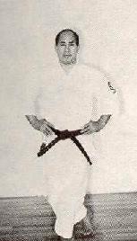
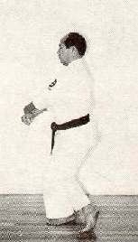

|
basic stances (dachi-kata) |
DEMONSTRATED BY SENSEI KUNIO MURAYAMA, 7TH DAN JKF SHITO-KAI.
Kosa Dachi
"Hooked leg" stance.


References/Bibliography
Photographs by Ing. Antonio Rodriguez Gonzalez, excerpted with permission from Karate-do Shito-Ryu Shito-Kai Mexico - Manual Practico - 1986, Ing. Jose Luis Calderoni Elias.